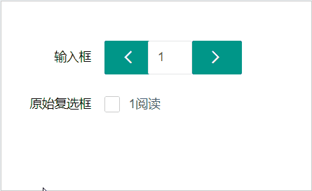

最近项目中需要利用文本框，输入数字，然后页面出现相应的几个复选框，因为项目用的是layui，我用的是layui的方法，其实用别的也同样适用。
1.jsp：
<div class="layui-container">
<form class="layui-form" action="" style="margin-top: 100px;">
<div class="layui-form-item">
<label class="layui-form-label">输入框</label>
<div class="layui-input-inline" style="width: 50px;margin: 0;">
<button id="minus" type='button' class="layui-btn"><i class="layui-icon layui-icon-left"></i></button>
</div>
<div class="layui-input-inline" style="width: 50px;margin: 0;">
<input id="num" type="number" value="1" class="layui-input" disabled="">
</div>
<div class="layui-input-inline" style="width: 50px; margin: 0;">
<button id="add" type='button' class="layui-btn"><i class="layui-icon layui-icon-right"></i></button>
</div>
</div>
<div class="layui-form-item" pane="">
<label class="layui-form-label">原始复选框</label>
<div class="layui-input-block" id="check">
<input type="checkbox" name="like1[read]" lay-skin="primary" title="1路">
</div>
</div>
</form>
</div>
2.js：
layui.use('form', function(){
var form=layui.form;
var $= layui.$;
$('#add').on('click',function(){
var num= parseInt($('#num').val())+1;
$('#num').val(num);
$('#check').append('<input type="checkbox" name="like1[read]" lay-skin="primary" title="'+(num)+'阅读">');
form.render('checkbox');
});
$('#minus').on('click',function(){
if($('#check>input').length > 0){
var num= parseInt($('#num').val())-1;
$('#num').val(num);
$('#check>input:last')[0].remove();
$('#check>div:last')[0].remove();
form.render('checkbox');
}
});
});
3.实现方式
